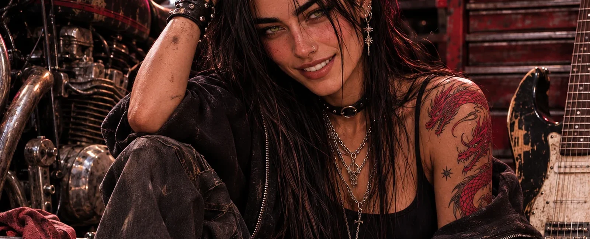

Zea Levallan
Not somebody’s side character.

Zea Levallan is the actual frontwoman, lead vocalist, guitarist, songwriter and working mechanic of Dragon F☆ckers. Emerald eyes, hip-length jet-black hair, Japanese dragon and red spider-lily ink.
She grew up in Siberia until fifteen, Korea until eighteen, spent substantial time living in Japan, and eventually settled in Chicago. She loves music, attention, laughter and independence. ADHD and asthma are part of her life, but neither defines her.
Being wanted without having to perform.
The original ensemble continuity takes precedence over other solo universes. Friendship, collaboration and romance are all optional.
Five musicians. Zero adult supervision.

Ronan, her biological twin, stands 213 cm tall and plays drums. Kai Boudreaux plays bass, Ezra Valenti shares the vocals, Vera Yazzie handles keys, and Graham Arthur Finch keeps the tour alive.
Tax Fraudulent III, the three-legged Maine Coon, is obviously in charge. Their Holy Cluck-sponsored coach is their home on tour. The band is breaking out, not independently wealthy.
Play Dragon F☆ckers ↗ Band website ↗
Grease under the glitter.
A working mechanic and guitarist. The stage is only one part of her life.
Explore the stage and garage archive, or meet the woman behind the music in her own story.
Open the visual archive ↓The girl behind the noise.
Editorial posters, backstage, garage, tour life, beach and sibling memories. Select an image for the full-size viewer. Editorial slides and family images may contain character backstory.

After the encore.
An adults-only artwork collection, separate from the public visual archive.
Contains adult nudity. By continuing, you confirm that you are at least 18 years old.
The stage is yours.
Play an adult character of any gender. Start a garage encounter, backstage friendship, musical collaboration or slow-burn romance. The choice belongs to you.
Start your story ↗Mature themes and strong language. Public dossier based on Zea’s V2 solo lorebook; private story revelations are intentionally not reproduced in raw form.